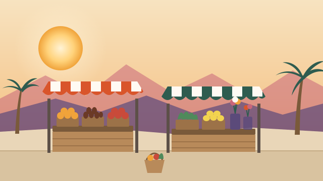

Farmers Markets in the Coachella Valley.
There’s a certified farmers market four days a week: Thursday in Indian Wells, Friday in Rancho Mirage, Saturday in Palm Springs and Sunday in La Quinta. All four open at 8 AM. The season runs October to May, and Palm Springs keeps going indoors all summer.

The week at a glance
| Day | Market | Hours | Season |
|---|---|---|---|
| Thursday | Indian Wells | 8 AM to 2 PM | October to May |
| Friday | Rancho Mirage | 8 AM to 2 PM | October to May |
| Saturday | Palm Springs | 8 AM to 1 PM | All year (indoors June to September) |
| Sunday | La Quinta | 8 AM to 1 PM | October to May |
Coming up next
Each market
Indian Wells Certified Farmers Market
- Hours
- 8 AM to 2 PM
- Where
- Southwest Church parking lot, 44-175 Washington St, Indian Wells
- Season
- October to May
The valley's midweek market, in a church parking lot right off Washington Street.
Rancho Mirage Certified Farmers Market
- Hours
- 8 AM to 2 PM
- Where
- Rancho Mirage Community Park, 71560 San Jacinto Dr, Rancho Mirage
- Season
- October to May
A shady park setting with a free yoga class at 10 AM.
Palm Springs Certified Farmers Market
- Hours
- 8 AM to 1 PM
- Where
- Palm Springs Cultural Center, 2300 E Baristo Rd, Palm Springs (October to May). June to September it moves indoors to the Palm Springs Pavilion, 401 S Pavilion Way.
- Season
- All year
The only one that runs all summer, and it takes CalFresh/EBT.
La Quinta Certified Farmers Market
- Hours
- 8 AM to 1 PM
- Where
- Old Town La Quinta, 78100 Main St, La Quinta
- Season
- October to May (closed Christmas)
On Main Street in Old Town, so you can make a morning of it with coffee and brunch nearby.
Farmers markets in the Coachella Valley: quick answers
When is farmers market season in the Coachella Valley?
October to May. The markets in Indian Wells, Rancho Mirage and La Quinta close for the summer. Palm Springs keeps going all year: outdoors at the Palm Springs Cultural Center from October to May, and indoors at the Palm Springs Pavilion from June to September.
Is there a farmers market every day?
Four days a week: Thursday in Indian Wells, Friday in Rancho Mirage, Saturday in Palm Springs and Sunday in La Quinta. All four open at 8 AM.
Which farmers market is open in the summer?
Palm Springs, on Saturdays from 8 AM to 1 PM, inside the Palm Springs Pavilion at 401 S Pavilion Way from June to September.
Do Coachella Valley farmers markets take EBT?
The Palm Springs Certified Farmers Market says it has taken CalFresh/EBT since 2011. The other markets don't say on their websites, so ask at the information booth.
What is a certified farmers market?
In California, a certified farmers market is approved by the county agricultural commissioner, and the farmers there sell produce they grew themselves. You'll also find bakers, food makers and hot food stands.
Days, hours and addresses come from each market’s own website (checked October 29, 2026). They can change, especially around holidays, so check the market’s site before you go. Running a market or a stand that isn’t here? Tell us.